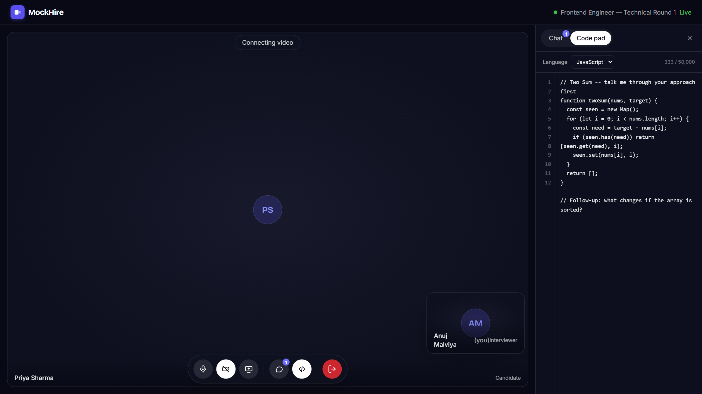
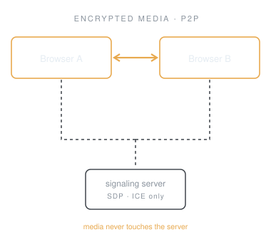
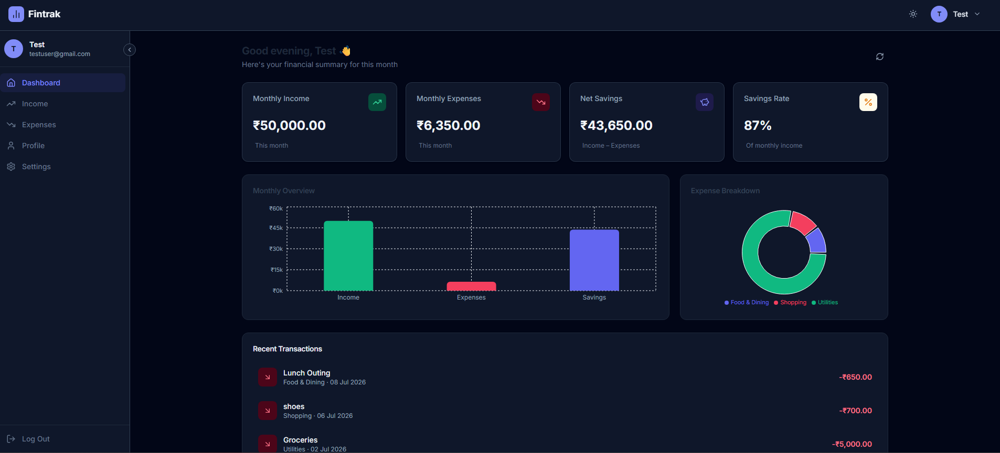

I build full-stack systems from primitives — and stay to fix what breaks in production.
Every project I've shipped has taught me the same lesson from a different angle: the happy path is the easy part. A peer-to-peer interview platform, a finance dashboard, a notes app on Redis-backed rate limiting, even a throwaway quote generator against an API that allows five requests an hour — each one turned out to be about failure states. Reconnection, cold starts, race conditions, 429s.
On MockHire I chose raw WebRTC over a paid SDK, then spent a week fixing offer collisions and ghost disconnects a managed service would have hidden. I'd make the same call again.


MockHire — peer-to-peer technical interviews.
Media never touches my server. No Twilio, no Agora, no SDK.
Building — Production-grade full-stack applications with AI, real-time communication, and scalable architectures
Learning — Cloud-native deployments, DevOps practices, scalable system design, and software architecture
Exploring — Agentic AI systems, developer tooling, and building software that scales gracefully in production
Self-hosted technical interview platform — P2P video, shared editor, structured feedback.
crypto.randomBytes, authorized server-side per socket against the DB, with an 8-hour expiry. A leaked URL still doesn't get you in.503 + Retry-After until ready. Cold starts don't drop traffic.React · Socket.IO · WebRTC · Express · MongoDB · Tailwind

Personal finance dashboard — income and expense tracking with analytics and Excel export.
React 19 · Recharts · Express · MongoDB · JWT
Also here — ThinkBoard, a notes app with a Redis sliding-window limiter and a dedicated 429 state · NeetCode-150, ongoing DSA practice.
Decisions get written down.
Every milestone in MockHire has a decision record indocs/decisions/. Six months from now I can still explain why the server binds before it connects — and, more usefully, what I'd have to believe to change it.
Bugs get instrumented, not guessed at.
Instrument, reproduce, fix, document, then remove the instrumentation. Three separate WebRTC failures went through that loop — including one I introduced while fixing the previous one. No diagnostic logging survived intomain.
Security is a default, not a feature.
JWTs in httpOnly cookies rather than localStorage. Token-version revocation so logging out actually invalidates. Roles re-read from the database on every request instead of trusted from a payload the client holds.
Failure is the default case.
Servers boot before their database is reachable. Peers refresh mid-call. Free-tier APIs cut you off at five requests an hour. I design for those first and treat the happy path as the special case.
Core — React · Node · Express · MongoDB · Socket.IO
Real-time — WebRTC · WebSockets · Redis
Also — Tailwind · Bootstrap · C++
B.Tech CSE, VIT Bhopal · open to backend and full-stack roles
The bug you can't reproduce is the one you haven't instrumented yet.